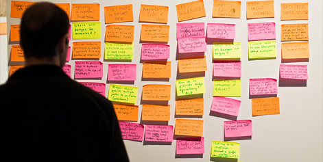

LEARNING x FREEDOM x THE WEB
Learning gets more agile, more active, more participatory, more like the web. The web strengthens its public mission and its place in human history. Everyone gets to invent his or her own end to the story.
Free Knowledge
Institute
As befits members of a revolutionary European collective, the founders of the Free Knowledge Institute chose to complete their interview collectively, on a wiki. Wouter Tebbens founded the Barcelona-based free software company, xlocal.com. He also helps develop tech strategy for the Dutch government. David Jacovkis has worked as a systems engineer, ICT consultant and editor of educational materials. Nowadays he collaborates with Ismael Pena Lopez’s university, the UOC, as well as the Dutch government. Franco Iacomella studies at the University of Buenos Aires (UBA), in Argentina, FLACSO (Latin American School of Social Sciences,) and consults for the UOC.
Can you tell me how the Free Knowledge Institute got started?
The FKI started as a spinoff of the Dutch chapter of the Internet Society [a non-profit founded in 1992...“dedicated to ensuring the open development, evolution and use of the Internet for the benefit of people throughout the world”].
Why are you interested in the free sharing and reuse of knowledge?
Our interest in sharing knowledge without restrictions is huge. We explore this from various angles:
On a personal level, we have all experienced the great excitement to create, use, and share knowledge. It’s amazing to be able to access this huge knowledge base that the Internet provides us, to contribute to a peer-produced movie, reuse course books from others, listen to free music, be able to create a book without anything else than your own time and that of your peers. And so much fun! The production of knowledge, affects, code, and images is also described as bio-political production, or peer production. Now that we start to understand these new forms of production, we can also appreciate why some of the strongest corporate powers feel so threatened ! Think of the entertainment industry, Big Pharma, Monsanto, Microsoft, and Apple.
We are working together with a growing multitude of people all around the world to stand up against these old “aristocratic” powers and establish the new forms of peer production of free knowledge within the old system of capitalism. We foresee that a new productive and organizational system is emerging from the ashes!
What would you say is your main motivation for working on free and open education?
Equality and freedom are fundamental principles of democracy and are also basic preconditions for a true Knowledge Society. Information and communication technologies enable access to knowledge and higher levels of innovation and inclusivity, enriching the diversity of individuals and groups that are able to contribute and participate.
How did the Free Technology Academy get going? How many people are participating? What are the characteristics of your students in terms of their demographics and preparation for study? What kinds of projects are they working on?
Although there is a growing interest in free technologies, there is still a limited number of ICT professionals, teachers, and decision makers with expertise in these fields. This is particularly problematic since these are crucial actors in promoting and implementing free technologies.
In order to tackle this problem, the Free Technology Academy has been set up as a distance education program, a joint initiative from several educational institutes in various countries.
What are the main obstacles standing in the way of an entirely free and open world of education? Are they technological, social, matters of government policy or the conduct and structure of institutions?
We could write a whole book about this topic. In a broad scale, we can say that the main obstacles are not technological, they arise from policies in governments and educational institutions. Some have to do with recognition and certification of formal learning, others with pedagogical models that have not evolved to adapt to the knowledge society, and others with copyright law and publishing practices that are not exclusive of education.
Do you think institutions will adapt to the new reality or will educational innovators have to find workarounds?
“Education” as a concept itself is being redefined. The great challenge of our time is to save the world from inevitable collapse of the current global capitalist system through the construction of distributed, sustainable, egalitarian, and autonomous societies.
There are concerns about participation in open education by traditionally disadvantaged student populations. What is the best way to reach these students?
Open education empowers traditionally disadvantaged student populations. The old Dutch saying, “If you were born a dime, you can never become a quarter,” is being put aside by, amongst others, open education. The success of open education depends on a well-structured outreach to these populations, together with facilitation and guidance. You’re not done by putting learning materials online along with a note, saying: “You can download these, click here.” You need to initiate and mobilize the networks (start with your neighbor)—and you’ll find out these networks are intertwined and energized by each other.
Enable the students to have access to technology, whether that be work in developing and transitional countries, or by teaching your mother-in-law how to switch on a computer.
Anything else you’d like to say about the future of education? What will education look like in 2020?
We hope it will be fun and engaging, and will allow learners of all ages to grow as autonomous individuals and participate in a global community.
Badges
Cracking assessment is the next major frontier of the open learning revolution. Badges = assessment for informal/authentic/peer-based/practical learning. By way of introduction to Badge Lab, Phillip Schmidt told the crowd: “We’ve been given an accreditation system that’s broken and we want to fix in the next two days.” What are badges and what do they have to do with learning, freedom, and the web?
From the paper, “An Open Badge System Framework: A foundational piece on assessment and badges for open, informal and social learning environments.”
An Open Badge System Framework:
Imagine... a world where your skills and competencies were captured more granularly across many different contexts, were collected and associated with your online identity and could be displayed to key stakeholders to demonstrate your capacities. In this ideal world, learning would not be limited to a formal classroom, but could come from open education courses, previous experience, discussion with peers, participation in a forum or that book you read...evidence of skills could be acquired automatically from your interactions with online content or peers, could be explicitly sought out through various assessments or could be based on nominations or endorsements from peers or colleagues. This would allow you to present a more complete picture of your skills and competencies to various audiences, from potential employers to yourself.
This world is not purely fictional, but instead is the direction that we are moving. The next step is to support and acknowledge this learning so that these skills and competencies are available and become part of the conversation in hiring decisions, school acceptances, mentoring opportunities, and even self-evaluations. This is where badges come in.
Badges can refer to any system of recognition for informal learning or accomplishment. There are many examples in the real world from badges in Boy Scouts to black belts in Tae Kwon Do. There are also emerging examples in online communities, like Wikipedia barnstars.
{kind=link}
10. Slashdot.org. This social news site awards badges for various kinds of achievements, such as The Tagger, Posted a Comment, The Contradictor, Days Read in a Row, Comedian, and Member of the {1,2,3,4,5} Digit UID Club. With a large community and a lots of data and functionality on the site, this minimal badge system has a great potential for growth.
9. World of Warcraft. 100s of achievements you can earn that cover every facet of game-play. General gameplay achievements cover everything from the number of levels you have completed to getting a haircut. There are achievements for alliances, and player-verus-player achievements.
8. Edufire. This is a live video learning site. Badges in eduFire track your activities on the site, including: ‘I’ve Promoted Myself on Craigslist,’ ‘I’ve Left 20 Ratings,’ ‘My Idea was Implemented!.’ ‘1,000 Unread Inbox Messages,’ and ‘1000 Classes Taken.’
7. Professional Association of Diving Instructors (PADI). The PADI Rescue Diver Badge PADI badges are earned by completing training courses with PADI certified instructors. Courses and badges range from fun and playful such as the underwater photography to serious and dangerous topics such as deep water diving.
6. Wikipedia Barnstars. “It is the custom to reward Wikipedia contributors for hard work and due diligence by awarding them a barnstar. To give the award to someone, just place the image on their talk page (or their awards page), and say why you have given it to them. If you are sure the barnstar is appropriate, don’t be shy!”
5. Peace Corps Merit Badges. The Peace Corps Merit Badge project is run by a group of Peace Corps volunteers. The Web site contains a collection of badges, as well as the ability to suggest new badges or to design your own badge. What I find unique and interesting about the Peace Corps Merit Badge program is that each badge is associated with a life changing moment or a monumental triumph.
4. Martial Arts Rhee Tae Kwon-Do 1st, 2nd, and 3rd Dan black belts. The image to the left is above is an example of black belts of Rhee Tae Kwon-Do. Wikipedia informs us that this particular school has a rank system that works as follows. There are ten colored belt grades, or kup ranks, and nine black belt degrees, or dan ranks. Non-black belts, from white through to brown, denote the kup ranks. A specific dan rank is represented by the number of white bars embroidered on the black belt.
3. StackOverflow.com. StackOverflow.com is a community driven Q&A site. You earn badges along the way for everything from filling out your profile (“the autobiographer” badge), to providing great answers to people’s questions. Badges are organized into three categories: bronze, silver, and gold. Another component of the StackOverflow system is that you can earn “reputation” points by posting, commenting, etc. Some uses of the site require a certain reputation level to be attained. For example, you can not rank up or down a given post unless you have attained a reputation of 125.
2. The Scout Movement Merit badges. It is typically the case that the national branch of the organization dictates what badges Scouts may attempt to go for as well as be the sole authority when it comes to granting badges (e.g., Scouts submit applications that are submitted in conjunction with a troop leader; if the student passes, the national organization mails them an embroidered cloth badge).
1. United States Military. A lot of thought has been put into the dozens of awards and decorations awarded by the US Military. Despite the depth and breadth of the system, every detail of it has been described in exacting detail, down to the exact dimensions; where and how the decorations and various medals should be worn; and what combination of medals and ribbons is appropriate to wear on specific occasions.
Learning/freedom/web people are getting excited about badges as a new kind of accreditation, one that can help motivate self-directed learners and gloss learner centered and peer-based learning with just enough formality and authentication to get it recognized by a wider community. The “audience” for badges could include employers, potential mentors, and professionals in a field, peers, and even yourself.
Mozilla has a very specific use case for badges. They’re investing in a School of Webcraft badge pilot program to help create a Mozilla badging system. As Mitchell Baker suggested, they want to create “a viable alternative to Cisco and Microsoft certification so Mozilla participants can use it to find a career.”
Developing more free, more web-like ways of recognizing learning is important for philosophical, not just practical, reasons. The power to grant accredited diplomas remains the key to the kingdom for traditional education. Economists and sociologists refer to the “signaling” power of diplomas and the “sheepskin effect” to make the point that possessing a degree—no matter the quality of the learning behind it—is the make or break for whether people will have access to a whole host of opportunities and a higher income bracket. Break that monopoly, and you have taken a huge step forward in opening up learning.
A Mozillian named Leslie Orchard first suggested the idea on his blog this past summer:
What if Mozillians could give each other Merit Badges? It’s not an original idea, and there are lots of variations: badges for Scouts; medals for athletes; achievements for gamers—these are all tokens of recognition from a group to an individual.
The thing I thought might work for Mozilla, though, was this: What if there were no central committee in charge of inventing awards and overseeing their distribution? What if, by way of the same Open Web technologies and philosophies we support, the community could be empowered to craft artifacts of gratitude and present them to each other?}
Mark Surman later blogged about it:
Historically, we’ve used degrees and certificates to show what we know. This breaks down online— partly because we have no good way to show these credentials and partly because so much of our learning is now informal that degrees aren’t really relevant. People like P2PU, Remix Learning, and others have come to the conclusion that we could use online badges to represent these things. Sites like Stack Overflow already use badges like this. We’re going to do the same for the Mozilla/P2PU School of Webcraft.
In the words of Festival participants:
Why badges?
Dale Dougherty (Make magazine and the Maker Faire):
I’m interested in self-taught informal learning. It’s less for me about badges and more about trying to make visible what’s happening in informal education. I think of it as a set of paths through various stops: How did you get to be a welder, how did you learn to do this? What’s unique in the DIY space is the eccentric paths that people take.
Anna Haas (College Unbound/Big Picture Learning):
One of our biggest goals is to offer our students recognition for what they already know how to do new things they’re learning.
Alex Halavais (Trinity College):
Diplomas and transcripts have a chokehold on the education process. I’m interested in making institutions and noninstitutions interoperable.
Rafi Santo (Indiana University):
How do we validate informal learning when that’s where the best learning is happening? What happens when we attach validation because the minute we attach it, someone games the system?
Philipp Schmidt (P2PU):
Figuring out badges—making informal learning visible—is the key component that will let us change how education works today.
Five data points needed to define a badge:
• Identity of receiver
• Identity of issuer
• Rationale
• Audience
• Evidence
Simon Buckingham Shum, who works on human-centered computing, “sensemaking,” and content mapping at the Open University, a government-funded online university in the U.K., wrote about his ideas on badges after his experience at the Festival.
What does a radically flattened, net-enabled paradigm for accrediting learning look like? As I hinted in my interview for the Mozilla Festival last week in Barcelona (which was enjoyably activist/plot the revolution in vibe)—one of the really tough nuts to crack around open peer learning is accreditation.
Like many educational institutions, Open U is now experimenting with the accreditation of students’ prior learning and experience in a variety of ways. But Badge Lab was pushing the model to the extreme, asking the question at the top.
We came up with myriad use cases, categories of badge, worried about whether we were in danger of reinventing the lumbering institutions we’re trying to move away from, as well as recognizing, but not dwelling upon, the challenge:
A Badge infrastructure should be agnostic about who is awarding, and what the criteria are. Simple is best. Follow the principles of net-neutrality that’s made the Internet so successful. How the badge came to be awarded should sit outside the system: All the badge infrastructure needs to know is that it was awarded, with some basic, uncontroversial metadata that will allow others to build cool apps on top to browse, search, visualize, etc.
A Badge infrastructure is like Verisign: It gives confidence that the claimed badge really was awarded via an authenticated, trustable infrastructure.
A set of Badges is shorthand: something to scan quickly, a conversation opener to find out the Story Behind The Badge, just as you do when you see something on a CV, or a LinkedIn endorsement.
Many Badges will be Low Stakes: they’re not worth gaming the system to obtain, because their authority derives entirely from the awarder’s reputation. Since much of the time the awarder will be unknown to a third party, a key attribute of a Badge is the link the owner provides to the story/evidence.
There seems to be particular interest in Badges for authentic, practical learning. The point is that we already have existing systems in place for communicating and examining academic, abstract bodies of knowledge, but what’s missing is a way to document in one’s portfolio the authentic applications of one’s knowledge and skills, at an appropriate granularity. Moreover, since such displays of knowledge are by definition situated in unique contexts, the most authoritative sources of evidence will be real people who had direct contact with you.
We could equate Badges with clearly codified, formally assessed qualifications: a university might indeed provide a badge that confers a degree, but here we’re simply providing a digital replica of the current system. Instead, let’s think about how we appropriate symbols to project our identity.
Badges could—most likely will—be used for personal expression, like your clothes, homepage, blogroll, tweets, what’s on your bookshelf, or music playlist. I’m imagining not only community groups inventing badges to recognize talent and motivate their team, but groups of teenagers awarding each other badges, creating a local currency.
Some questions asked and answered by the Badge Lab over 2 days:
Who provides a badge?
• Mozilla
• Quest to Learn
• YouMedia
• NYCLN
• Current higher education institutions
• For-profit businesses (Kaplan, Pearson)
• Peers / community
What is it given for?
• Webcraft: Web developers, assessment handled by P2PU. Community drives the badge development, but frontload it. Webcraft community is developing the skills map-goals: motivation/engagement share information/skills across courses share information with the outer world.
• Accessibility: Best practices, an inclusive way of coding the website, beyond its visual appearance: Semantic HTML/CSS Explainer, Enabler, Developer (with CC-like easy explanations).
• Soft Skills: Things like question/answering, teamwork, being an active community member, communication, problem solving, critical thinking, and talking to normal people.
• Volunteer Skills: An organization (like Crisis Commons) can put the call out using the badge system to locate new volunteers—matching people who have the time and the capacity to volunteer could be notified via the badge system, so badge becomes a volunteer service tool in addition to individual recognition and potential for employers, too.
How is it validated?
• Linked to a student portfolio, validated by a community but be able to show the work and represent the outcome?
• We could tie it into a Firefox extension, or use a delic.io.us tag for nomination, to enable a bottom-up process.
• Keep metadata? (e.g. reference to actual technical artifact, source code, revision). And to the version of the standard you are validating against, and the date? (e.g. CSS2/CSS3).
• Bugzilla parallel – allow community members to file a bug as in an open-source reporting system?
• Replicate Amazon metareview system: “Was this review helpful to you?”
• “Like” button that gives endorsements to both you and the endorsers?
• Person submits proof by describing what you have just done to local community, gathering their endorsements, submitting a video, having external people evaluate—all of that becomes the link behind the badge.
• Work with expert/professional/technical societies to create badges with demonstrable value.
How is it used?
• It validates!
• Smoothes the accreditation curve for informal, self-directed learning.
• Communicates clearly what you’ve done.
• Opportunity for others to learn from project.
• Hiring someone young or without a college degree that could use the badges.
• Not trying to replicate the grading system, where degrees are given by seat time.
• Badges: specific competencies, capture the subject mastery, capture the path.
• Membership in professional, techincal societies.
• Granularity can allow more specific expression of skills (not just “I am a doctor,” but “I am a doctor who is has a very specific expertise.”).
• To change higher education—transform from a system that weeds people out to a system that lifts people up--and create an alternate system. Who is it for?
Who is it for?
Employers, clients, students, communities, target audiences (users on the website), readers, other Webcraft community members.
And finally, what’s wrong with badges?
• Are we recreating the factory system of education? Will people game the system? Are we substituting extrinsic motivation for intrinsic motivation?
• What happens if commercial interests get in the game? Can openness remain the standard? Can we make sure our badge system eats theirs? What if Bb [Blackboard, the commercial learning management system] gets into the game?
• What if the market gets saturated with low-quality badges?
• How do we include marginalized communities?
• Renewal/validity: Anything based on technology will become obsolete so maybe badges expire, fade away, rust.
• For it to succeed, we have to seed well executed uses of that platform, and starting points for people that want to use it the point is, what does “well” or “good” mean? That they have accomplished something, there is some reason to have a badge?
• Are same hierarchies going to be replicated? We need a sense of playfulness, instead of just reinforcing the existing divides. What we are talking about is fundamentally more democratic, because the credibility of the badge will depend on the authority of that issuer—an open structure which is easy to use provides some way of saying that you can trust this badge. Let’s not over-engineer it from the beginning.
PROJECT:
Badge Backpack
At Drumbeat, a group produced a working prototype of the Badge Backpack, which has become an ongoing project.
Who: Erin Knight, Brian Brennan, the School of Webcraft, and many, many others.
What: An open infrastructure that fuels the growth of badges as a new way to incent and recognize learning. A public spec, API for badge issuers, and “Badge Backpack” software that lets individual learners collect and share badges between websites, social networks and apps.
Why? Revolutionize how we incent and recognize learning. Help learners open doors and get jobs.
What’s next: Since the Festival, a white paper outlining the badge and assessment model has been completed and circulated widely. A pilot version of the badge infrastructure is nearly complete, and a beta version will be ready for broader use as of January 2012.
Follow along at: https://wiki.mozilla.org/Badges
Paul Osman explained on his blog:
Badges can be issued by any site, stored in a “backpack” (which simply stores the badge data in localStorage) and consumer sites can show badges stored in the backpack with just a few lines of JavaScript.
Dan Mills, who also worked on the backpack, elaborated:
Sites that want to either provide or use badges import a JavaScript library, which behind the scenes uses post messaging to communicate with an iframe. That frame in turn uses local storage, so that no server storage is necessary (though it can be added). Things like identity verification get pushed to the edges, when a site retrieves a badge it can then query the source to determine if the badge is real, and whether it belongs to you.
{kind=link}
Philipp Schmidt is the Peer 2 Peer University (P2PU) co-founder and director and an open education activist/researcher. He runs several projects at the University of the Western Cape and is a board member of the OpenCourseWare Consortium. He’s also a tall, cool South African with a dry sense of humor. During the Festival he and another participant scouted a local shop with a giant boom box in the window that sold vintage and handmade sunglasses. Both started rocking black shades that looked like reimagined Wayfarers.
Can you retell the story of how you got started with P2PU?
Neeru Paharia and I met at the iCommon summit at Brazil in 2006 and 2007 and first started speaking about these things. In August of 2009, we got more serious. There was an Open Ed conference in Utah where we ran a workshop. It was the moment where we felt either people think this is a good idea and they’re going to get engaged in it, or maybe we were wrong and should be spending our time on other things. So let’s just try it and see what happens.
So what’s happening?
We’re about to launch the first set of pilot courses as an experiment. In the past we’ve held back because we need to answer questions like how we link to accreditation and how people assess each other. And what I’ve come away with is that you don’t need to have all the answers. People who sign up are happy to be figuring out these things with you. So I’ve just had a chat with all the people last week and we decided to jump in the deep end and start running and see what happens.
What kinds of courses are people signing up to do?
All kinds of things: creative nonfiction writing, behavioral economics, an “open education for educators” course, and Wikipedia visualization. These are all niche topics that appeal to a certain demographic group. It’s not your econ 101 or calculus tutoring or basic Spanish.
Was that a conscious decision, to steer away from general ed courses?
We thought about that quite a lot. I’m not so sure how that open P2P model works for these basic education services being provided by mass market universities.
There’s some pretty broad shifts in the way people learn and how they engage with each other, so why not take advantage of the possibilities rather than try to build a slightly better University that just costs less. We might add more basic or general courses later, but for some time we’re more excited about these quirky topics.
And it’s really up to your community what courses are featured, right?
Absolutely. The people who will join P2PU and who will be successful are really committed and willing to spend some time and energy to learn it. It’s people who would be going out and looking for the materials themselves who now can do in a community and get help from other people.
So what do you think about the connection between learning, freedom, and the web? Why is it that so many people who are interested in one, are interested in the other?
A couple of reasons. One is, there’s that whole conversation about 21st century schooling, which I find very convincing. I think the basic skills of communicating, finding information and knowledge, and finding the people to get the info you need is absolutely right. We need procedural skills of how to learn more than factual knowledge, since facts are changing more quickly now. It’s obvious that people need to evolve what they know throughout their lives much more than they used to.
Then, as people become more comfortable online and in these social networking applications, that has implications on how they engage with other people. It would be crazy if that didn’t influence how they look at education.
Why are you interested in badges?
The idea that one monolithic institution will provide everything—teaching, testing, accreditation, research—that idea is already an idea of the past. It seems like the institutions themselves are the last people clinging to that concept and everyone else is already innovating around them.
To define the interfaces, the fault line between formal/informal education, that’s where my interest lies.
People often hold up medicine as an example of a discipline where degrees will be used for a long time.
Certification will break out of the overall system in medicine, too. There’s no reason that universities should be accrediting doctors.
So what does all this have to do with badges?
Something I’ve been thinking about quite a lot is assessment and accreditation. Those are the crucial areas where we don’t have good answers yet. If you look at the Internet and the way information is managed there are a number of ways used to assess what’s quality. And the concept of quality is much more individualized than it was before.
On the one hand you can aggregate opinions more than ever before, so very quickly that’s a way to assess quality within a particular definition. That’s one way to look at what a student or learner is producing and what the community thinks about it. Another way we’re going to see a bit more is these trust networks.
Recommendation systems?
Right. Recently I’ve been speaking about these trust networks with a friend of mine who has written the code for Topsy, a Twitter real-time search engine. It’s like with LinkedIn, you can say: I think these are good people in that area. If you use that and place it as a filter on top of the web and look specifically at things people are doing as part of their learning, you can automate a quality assurance mechanism that’s incredibly complex, because we have all this computing power. People only have to say: I trust these three or four people, and you can come up with pretty accurate descriptions of learning quality, entirely taken out of the institutional space.
The second one is more, let’s say I assign a certain trust value to you: I know Anya is an expert on student debt. Even though I might not know anything about the subject in question, I can be fairly sure that there is quality there.
So you replace trust in an institution’s authority, the name on the diploma, with trust in a reputation-based, peer-to-peer community?
Well, that’s future music. We do know that peer assessment works. There’s been a huge amount of research on students’ ability to assess each others’ work. If you explain it well, students can do this. There are ways to control for bias and error that can be reliable.